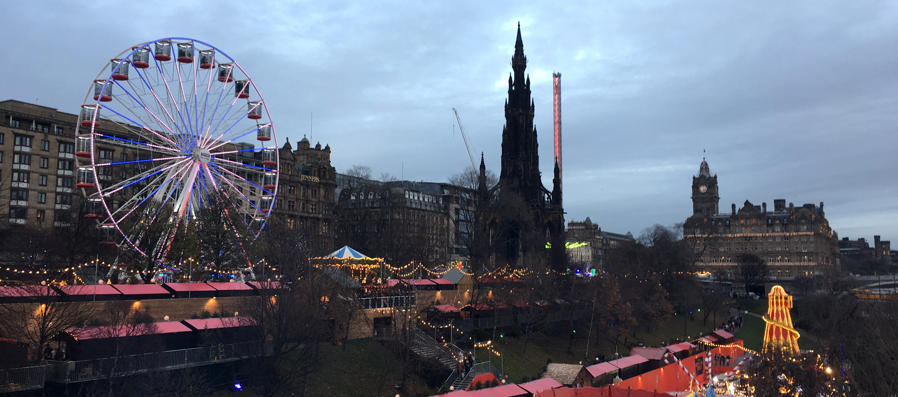

Alfie & Pantomime
Edinburgh & Glasgow, Scotland - December 3, 2017
I had a few very interesting days this week, so I figured I would elaborate on them. The first is when I met Alfie Deyes, creator of PointlessBlog on Youtube and someone I watch daily. The second is the Cinderella Christmas Pantomime show in Glasgow.
Thursday evening, St. Andrew's Day, I was preparing for the ceilidh being held in Teviot when I was browsing Instagram and watched Zoella's and Alfie's Instagram stories just to see what they were up to. I was shocked when I saw the Sir Walter Scott monument on Princes street in a few of their photos. They were in Edinburgh! Apparently last year they came to Edinburgh on November 30th as well, so I was able to browse their past videos to see roughly what they did last year on which days. I was determined to attempt to find them tomorrow at the Christmas market, where I thought they would be given Zoe loves Christmas and they didn't really explore the market on Thursday.
Thankfully I had to go to Princes street anyway on Friday afternoon to renew my bus pass and buy train tickets to Glasgow for the Christmas pantomime on Saturday. I left around 2:30pm, guessing that they [Alfie, Zoe, and friends] would be at the Christmas market just before sunset (which is 4pm in Edinburgh). I arrived at the Christmas market just after 3pm and wandered the stalls for a bit, keeping my eyes peeled. When I had no success, I looked at Instagram again to see where they were, and they were ice skating, so I headed out towards the entrance of the market in the direction of the ice skating rink. I asked someone who worked in the market where the rink was, and they said to take a right and go down to the end of the block before taking a left. So I headed down the street, looking around, when I literally ran straight into them. I spotted Mark Ferris first (he is very tall and easy to spot) and then saw literally everyone walk into the market right in front of me. I was able to say hi to Alfie (everyone else was huddled up together trying to figure out what they wanted to do) and he was nice enough to take a selfie and chat for a minute. I was a little sad about not getting a photo with Zoe, but I didn't want to corner the whole group when they were obviously busy. I was just glad to get a photo with Alfie. :)
After a successful mission, I was quite shaky the rest of the evening. I was probably slightly in shock that I actually 1) found them and 2) ran into them literally on the street. You hear about people running into celebrities in random places but I never thought it would happen to me. It was a Christmas miracle!
Saturday was not as amazing but still enjoyable. I went to the Cinderella Christmas Pantomime in Glasgow with Arcadia. I was expecting a very *interesting* show, but it turned out to be quite kid friendly. There wasn't really any cross dressing and besides some silly costumes and dancing as if it was a disco, it was very tame. I enjoyed the banter between the audience and the cast. We had fun being mean to the evil stepmother and helping Cinderella out.
The best part of the theatre production was the fact that the story was different from any other version I've read about Cinderella. This time, she was a princess who, because she was sassy, was delegated to the kitchen where she fell in love with a kitchen boy. She did go to balls with a prince, but the prince was narcissistic and didn't care about what her opinion was, so she ditched the prince for the kitchen boy instead. Very cute story! :)
Overall, a great ending to my last week of classes!
Cheers!
- Caileigh Marshall